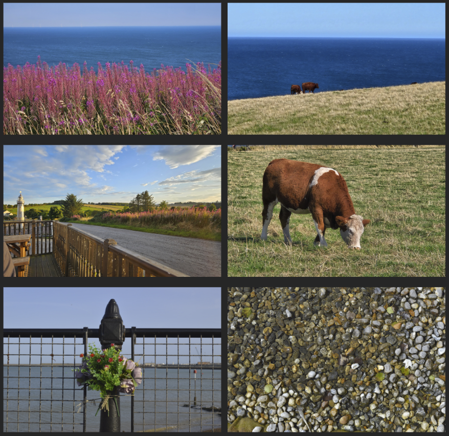

Visual Working Memory
How are visual memories represented in early visual cortex?
→Vision · Memory · Spatiotemporal Prediction
I study how the human brain remembers, predicts, and represents dynamic visual information, combining behavioral experiments, (f)MRI, eye tracking, and computational models.
Scroll to exploreHow are visual memories represented in early visual cortex?
→How does the brain keep track of moving objects when they disappear behind occluders?
→Using neural networks to understand visual prediction and temporal representations.
→Bringing neuroscience into the real world through exploratory side projects.
→Selected publications and preprints will appear here.
A collection of projects that explore vision science outside traditional laboratory settings: from natural image datasets, to cockpit eye tracking, to playful MRI demonstrations.


Field Note 01
Together with Amit Rawal, I was awarded the Tom Troscianko Grant to attend ECVP 2023, where we developed an image dataset from natural landscapes photographed across Belgium, France, England, and Scotland.
The dataset has been curated and preprocessed, and will shortly be made publicly available for vision scientists.
Field Note 02
While learning how to fly, I recorded visual scanning behavior in the cockpit using wearable eye tracking, capturing how gaze moves between instruments, outside visual references, and the runway environment.


Field Note 03
Using a 3T MRI scanner, we scanned fruits and vegetables to reveal their hidden internal structure and create striking images that make magnetic resonance imaging intuitive, playful, and visually engaging.
A downloadable CV will be available here.
Ernst Strüngmann Institute for Neuroscience
Frankfurt am Main, Germany